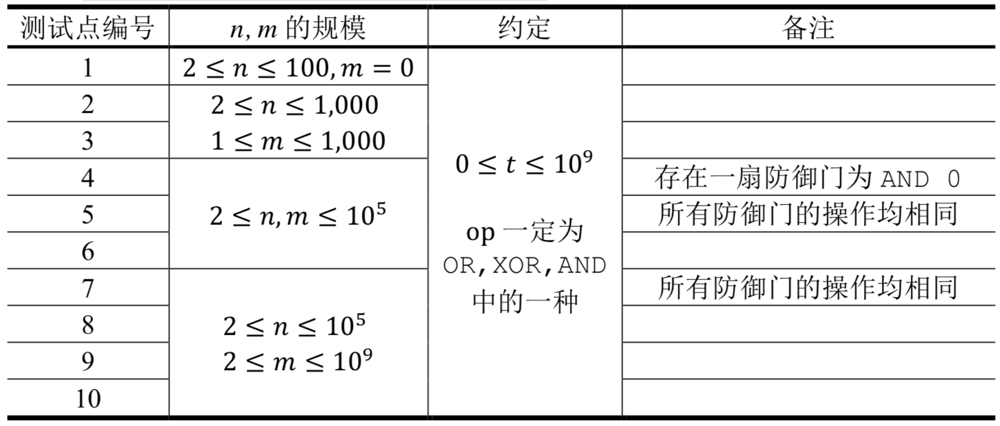
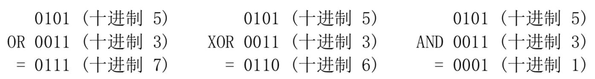

【样例说明】
atm可以选择的初始攻击力为0,1, ... ,10。
假设初始攻击力为4，最终攻击力经过了如下计算
4 AND 5 = 4
4 OR 6 = 6
6 XOR 7 = 1
类似的，我们可以计算出初始攻击力为1,3,5,7,9时最终攻击力为0，初始攻击力为0,2,4,6,8,10时最终攻击力为1，因此atm的一次攻击最多使drd受到的伤害值为1。
【数据规模与约定】
所有测试数据的范围和特点如下表所示

【运算解释】
在本题中，选手需要先将数字变换为二进制后再进行计算。如果操作的两个数二进制长度不同，则在前补0至相同长度。
OR为按位或运算，处理两个长度相同的二进制数，两个相应的二进制位中只要有一个为1，则该位的结果值为1，否则为0。XOR为按位异或运算，对等长二进制模式或二进制数的每一位执行逻辑异或操作。如果两个相应的二进制位不同（相异），则该位的结果值为1，否则该位为0。两个长度相同的二进制数，两个相应的二进制位都为否则为0。
例如，我们将十进制数5与十进制数3分别进行可以得到如下结果：

 Comet OJ
Comet OJ